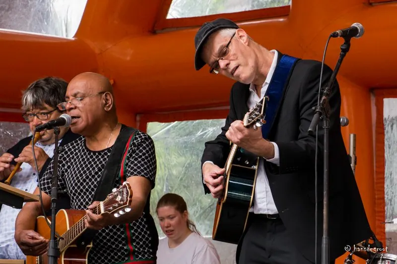
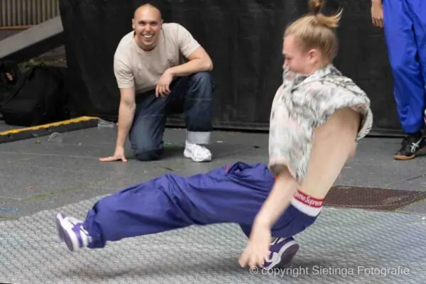
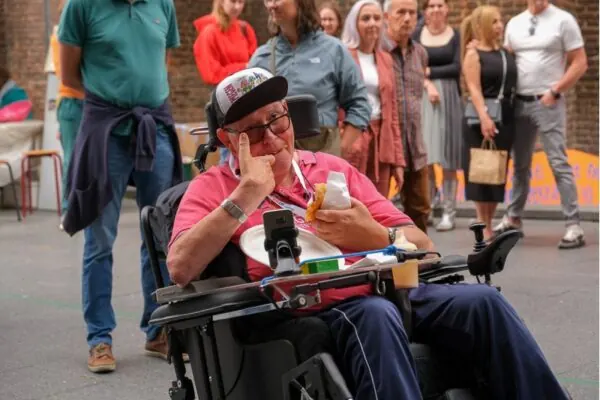

Nieuws ·
Waalzinnig Festival 2024

Het Waalzinnig Festival staat voor inclusie. Iedereen hoort erbij en iedereen mag meedoen! Bij het Waalzinnig stimuleren we iedereen om zich te uiten door kunst in al zijn verschijningsvormen. Art Inclusive noemen we dat: kunst voor en door iedereen.
- Kunst is er in allerlei vormen en formaten, net als wij mensen.
- Kunst helpt je om zelfverzekerder in het leven te staan.
- Kunst ontroert je, en laat je voelen waar het echt om gaat in dit leven.
Sinds begin dit jaar zijn er al vele groepen actief binnen de zogeheten co-producties, waarin in verschillende disciplines in heel gevarieerde samenstelling samen wordt gewerkt aan een optreden of expositie.
Samen maken we de wereld groter en mooier
Zo werken professionele fotografen met een groepje dementerende ouderen van de Waalboog en gaan zij terug naar een tijd en plek waarin er nog herinneringen zijn en zien we de glans weer in hun ogen komen. De Theaterstraat werkt aan een ontroerende voorstelling waarin op zoek wordt gegaan naar de stem. Bijzonder met een groep, waarvan een deel geen stem heeft. Figuurlijk niet, maar sommigen ook letterlijk niet. Basisschoolleerlingen spelen de djembe met ouderen en er wordt gedanst. Salsa met Oekraïners, modern met zittende dansers met een krachtig verhaal. En dat is nog maar een greep uit alle groepen die al maanden hard werken aan een mooie voorstelling. Waalzinnig heeft gezocht naar talenten, mensen uit alle geledingen uit de samenleving, mensen met uitdagingen die voor een ander vreemd zijn. Samen maken we. Creëren we en leren we een wereld kennen die we nog niet eerder kenden. Zo maken we samen de wereld groter en mooier.
Festival Weekend 29 en 30 juni bij het Waalzinnig Festival
Op zaterdag 29 en zondag 30 juni komt alles bij het Waalzinnig Festival samen tot een zinderend geheel, verdeeld over verschillende podia op het Mariënburgplein, in de bibliotheek, LUX en in de Lindenberg. Dan kun je kijken en genieten van de voorstellingen uit de co-producties, maar met nog heel veel meer optredens van toptalenten, internationaal en nationaal. En kun je meedoen met een van de workshops op het meedoen plein, beleef je via een bijzondere VR beleving hoe het is om mee te dansen met Introdans. Swing je op de opzwepende ritmes van een van de vele bandjes die er zijn. Geniet je van moderne dans, klassiek hiphop en streetdance. Sport je mee met stichting Koprol. Ervaar je hoe het leven van een ander is. Slenter je langs de kunst en crea kramen op de markt. Zoek je de verstilling in de filmzaal. Of open je je wereld in een van de theaterzalen van de Lindenberg of LUX. Ga in de bibliotheek het gesprek aan met een van de levende boeken.
Er is veel… heel veel te doen en te beleven.
En het is allemaal GRATIS.
Op beide dagen zijn we er van 12.00 tot 18.00 uur.

Bijzonder talent bij het Waalzinnig Festival
Kunst is er voor iedereen. Onze artiesten zijn echter wel geselecteerd op hun bijzondere talent. Met zangers en zangeressen die je kippenvel bezorgen. Theaterdieren die je laten huilen van ontroering. Cabaretiers die je laten huilen van het lachen. Muzikanten die je meenemen in de wereld van de jazz, rock, pop of het levenslied. Dansers die laten zien welke verhalen een lichaam te vertellen heeft. Fotografen die de ziel blootleggen.
Een selecte groep artiesten krijgt extra ondersteuning vanuit de Lindenberg. Om zich verder te bekwamen in hun muziek of leren hoe zij het podium het best kunnen gebruiken. Deze artiesten worden het komende jaar verder geholpen aan optredens op verschillende nationale podia via het Waalzinnig Artiestenbureau.
We doen er kortom alles aan om elk talent te laten schitteren.

Waalzinnig in de wijk
Het waalzinnig festival is er niet alleen tijdens het weekend van 29 en 30 juni. Op zaterdag 15 juni is Waalzinnig in de wijk Meijhorst in de Ontmoetingskerk met verschillende optredens, een bijzondere theetuin, markt en een expositie met werk van kunstenaars Carine Doctor, Danny Bodt, Tonnie Ohlenroth en Mignon Ohlenroth. Op zondag 23 juni is Waalzinnig in de wijk Hees in de sancta Maria kapel. Daar zal o.a. Jukebox optreden, is er veel lekkers en een kleedjesmarkt. Het zal er spetteren en bruisen.
Ook deze festivaldagen zijn gratis te bezoeken.
Meer over het Waalzinnig Festival vind je op de website: www.waalzinnigfestival.nl.
Voor meer achtergrondverhalen volg je de PODCAST die Waalzinnig ambassadeur Jolan en podcast-maakster Eva maakten (via de website van Waalzinnig).